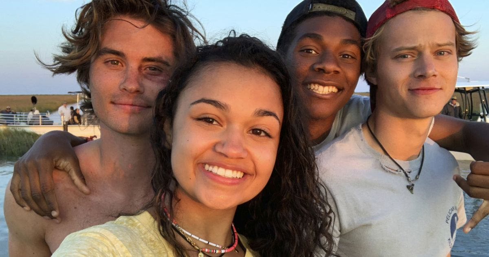
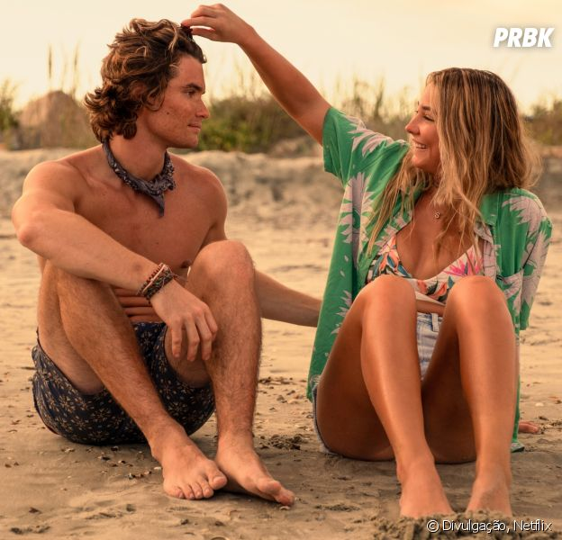

Outer Banks segue um grupo de adolescentes nos Outer Banks da Carolina do Norte,
chamados "Pogues", que estão determinados a descobrir o que aconteceu com o "pai
desaparecido do líder". Ao longo do caminho, eles descobrem o tesouro lendário do
famoso Royal Merchant que está ligado ao pai..
Elenco:
Juntamente com o anúncio inicial da série, foi relatado que Chase Stokes, Madelyn Cline,
Madison Bailey, Jonathan Daviss, Rudy Pankow, Charles Esten , Austin North e Drew Starkey
foram escalados para o papel principal. Em 2 de julho de 2019, Caroline Arapoglou se juntou
ao elenco em um papel recorrente. Em 22 de outubro de 2020, Elizabeth Mitchell foi escalada
para um papel recorrente na segunda temporada.

O que vai acontecer na 2ª temporada?
A primeira temporada de "Outer Banks" acabou com vários ganchos e questões a serem respondidas.
A maior delas, sem dúvidas, é se os protagonistas conseguirão recuperar o tesouro que o pai da Sarah
roubou. Mas também queremos muito ver o Ward (Charles Esten) sendo desmascarado e perdendo a fama de bom moço!
E como vai ficar a relação da Kiara e do Pope (Jonathan Daviss)? Será mesmo que esse casal vai para frente?
